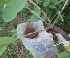
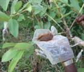
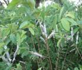

|
 |
 |
Season of planting
The planting is distributed from June - December.
Spacing
A spacing 5 - 6m in either way is generally followed.
Planting
Plant the layers with the ball of earth in the centre of pit of 45 cm x 45 cm x 45 cm size filled with FYM 10 Kg neem cake 1 Kg and top soil
Irrigation
Irrigate copiously immediately after planting, again on third day and afterwards once in 10 days or as and when necessary.
Manures and fertilizers
FYM 50 Kg and one Kg in each of N, P and K per tree in two split doses during March and October should be applied. To increase the yield, spray Urea 1 % + Zinc sulphate 0.5% twice a year during March and October. To correct the boron deficiency (reduction in size of leaves and fruit cracking and hardening) spray 0.3% borax during flowering and fruit set stage.
Micronutrients spray for controlling bronzing of leaves
A combined spray should be given containing ZnSO4, MgSO4 and MnSo4 @ 0.5% and CuSO4 and FeSO4 @ 0.25 % plus Teepol @ 1ml per 5 lit of solution on various stages as follows:
- New flush 3. Flowering
- One month after 4. Fruit set
Intercropping
Legumes and short duration vegetable crops may be raised during pre-bearing stage.
Aftercultivation
Pruning of past season’s terminal growth to a length of 10-15 cm is to be done during September-October and February – March to encourage more laterals. The erect growing branches are to be bent by tying on to pegs driven on the ground. Old unproductive but healthy trees can be rejuvenated may be either pollarded or cut back to 75 cm from ground level or dehorned by cutting the secondary branches at a distance of 75 cm from their origin.
Plant protection
Pests
Tea mosquito bug
Spray Quinalphos 25 EC at the rate of 2 ml/lit or Malathion 50 EC at the rate of 1 ml/lit or Monocrotophos 36 WSC @ 2ml/lit or neem oil 3 %. Spraying should be done in early mornings or late evenings, at least four times at 21 days interval during fruiting season.
Aphids
Spray Monocrotophos 36 WSC @ 1ml/lit or Dimethoate 30 EC @ 2 ml/lit to control aphids.
Mealy bug
The mealy bugs can be controlled by spraying Triazophos @ 2ml/lit + neem oil 5 ml or phosalone 0.05% + neem oil 5 ml. Release of Cryptolaemus montrouzieri beetles (Coccinellid beetles) @ 10 beetles /tree is also recommended.
Fruit fly
Spray Quinalphos 25 EC or Malathion 50 EC @ 1 ml/lit four times at 15 days interval. Use polythene bags fish meal trap with 5 gm of wet fish meal + 1 ml. dichlorvos in cotton. 50 traps are required/ha, fish meal and Dichlorvos soaked cotton are to be renewed once in 20 and 7 days respectively.
Safe waiting period
For Monocrotophos 36 WSC-10 days and for Malathion 50 EC – 9 days.
Diseases
Red rust
Spray Copper oxy chloride 2.5 g /lit or Bordeaux mixture 0.6 % or Wettable sulphur 2 g/lit to control red rust.
Harvest
Layers come to bearing in 2 - 3 years. The first crop can be harvested during February – July and the second one during September – January.
Yield
The crop yields about 25 t/ha.
Market information
Growing Districts |
Dindigul, Madurai, Virudhunagar,Villupuram, Vellore, Tirunelveli |
Major Markets in Tamil Nadu |
Palani, Madurai, Koyambedu Wholesale Market |